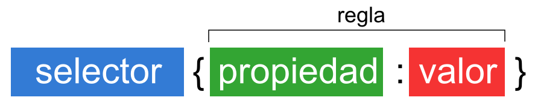

INTRODUCCIÓN AL CSS3
CSS3 es el estandar para el diseño visual de los documentos web, e interfaces de usuario escritas en HTML o XHTML; el lenguaje puede ser aplicado a cualquier documento XML, incluyendo XHTML, SVG, XUL, RSS, etcétera. También permite aplicar estilos no visuales, como las hojas de estilo auditivas.
CSS3 es la última evolución del lenguaje de las Hojas de Estilo en Cascada (Cascading Style Sheets), y pretende ampliar la versión CSS2.1. Trae consigo muchas novedades altamente esperadas , como las esquinas redondeadas, sombras, gradientes , transiciones o animaciones, y nuevos layouts como multi-columnas, cajas flexibles o maquetas de diseño en cuadrícula (grid layouts).
ESTRUCTURA BÁSICA CSS3
Como HTML, CSS no es realmente un lenguaje de programación. Es un lenguaje de hojas de estilo, es decir, te permite aplicar estilos de manera selectiva a elementos en documentos HTML. Por ejemplo, para seleccionar todos los elementos de párrafo en una página HTML y volver el texto dentro de ellos de color rojo, has de escribir este CSS:
- Selector: El selector es el elemento HTML que vamos a seleccionar del documento para aplicarle un estilo concreto. Por ejemplo, el elemento p. Realmente, esto es mucho más complejo, pero ya dedicaremos una serie de capítulos exclusivamente a este tema.
- Propiedad: La propiedad es una de las diferentes características que brinda el lenguaje CSS e iremos aprendiendo.
- Valor: Cada propiedad CSS tiene una serie de valores concretos, con los que tendrá uno u otro comportamiento.
Con todo esto le iremos indicamos al navegador que, para cada etiqueta (selector especificado) debe aplicar las reglas (propiedad y valor) indicadas.